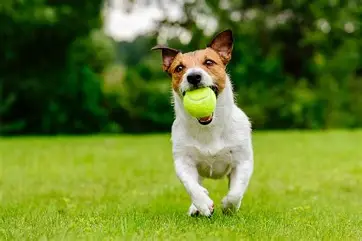

Taking Care of Your Dog
Dogs need love, attention and proper care to live happy and healthy lives. Responsible dog ownership includes providing food, clean water, exercise, grooming and a safe place to sleep.
1. Daily Dog Care
Daily care is important for keeping your dog comfortable and healthy.
- Provide fresh drinking water every day.
- Feed your dog balanced meals.
- Keep your dog's sleeping area clean.
- Give your dog enough exercise.
- Spend time playing with your dog.
2. Grooming Your Dog
Grooming helps keep your dog clean and comfortable. Different dogs need different grooming routines.
- Brush your dog's coat regularly.
- Bathe your dog when necessary.
- Keep your dog's nails at a suitable length.
- Check and clean the ears when needed.
- Maintain good dental hygiene.
3. Exercise and Play
Exercise helps dogs stay active and mentally stimulated. Walking and playing are enjoyable ways to spend time with your dog.
- Take your dog for regular walks.
- Provide safe toys for playing.
- Allow supervised outdoor activities.
- Choose activities suitable for your dog's age.

4. Keeping Your Dog Comfortable
Every dog deserves a safe and comfortable environment. Make sure your dog has a clean place to rest and enough space to move around.
- Provide a comfortable sleeping bed.
- Keep the living area clean.
- Protect your dog from extreme weather.
- Make sure your dog has access to fresh water.
- Give your dog love, attention and companionship.
5. Responsible Dog Ownership
Being a responsible dog owner means providing proper care, attention and veterinary support. Always treat your dog with kindness and patience.